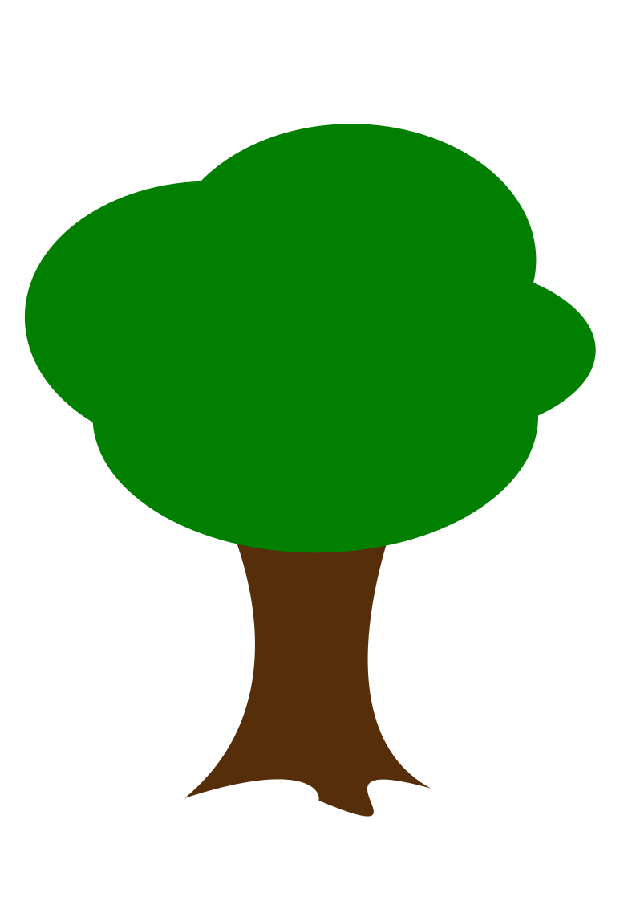
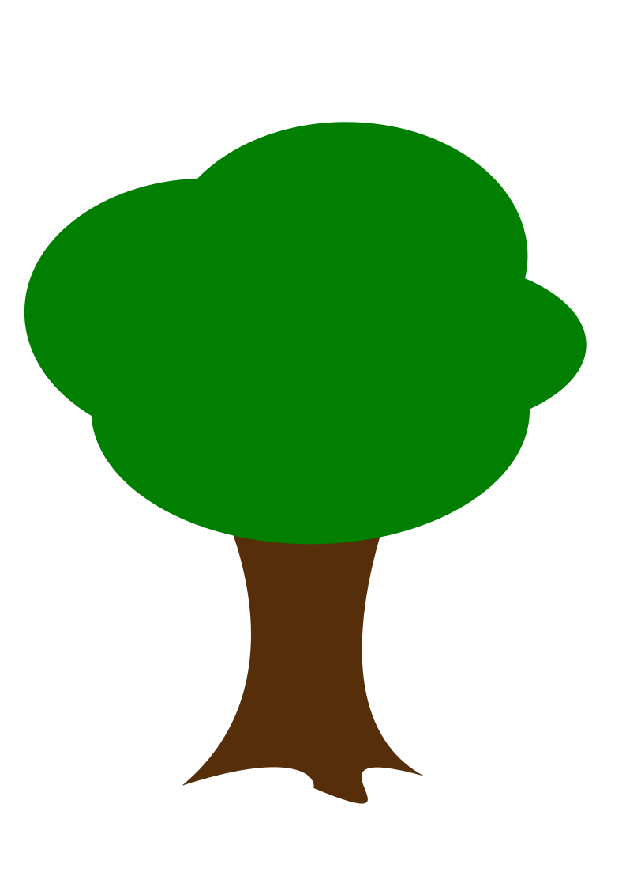
 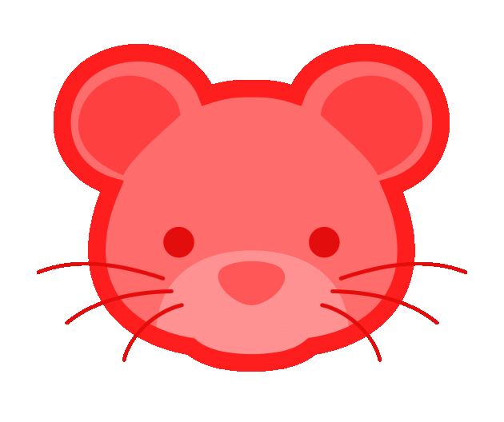
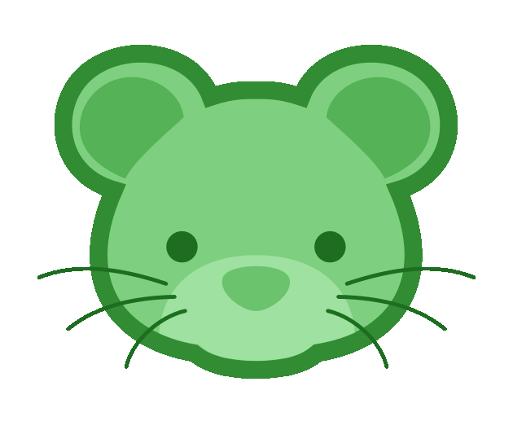
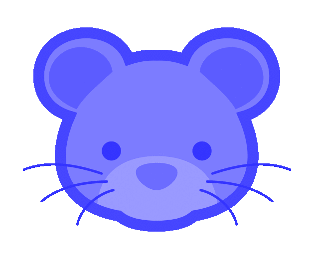
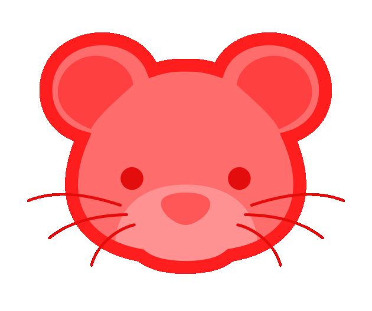
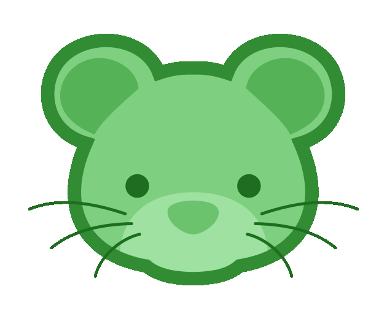
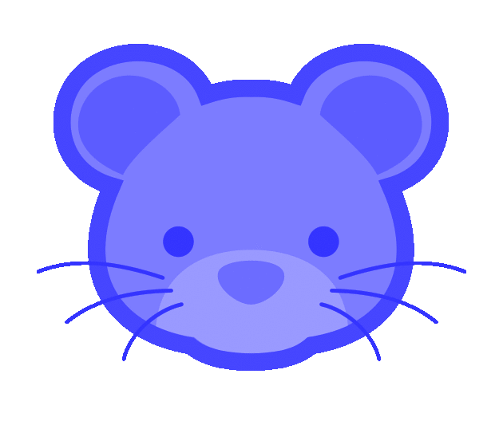
throw ball
Click to throw the ball. Click on the mouse that has caught the cheese. Click again to reset.
You have 15 chances to guess. Each correct guess gives you a point, which will be tallied in the bottom left hand corner of the screen.
{% endblock %} {% block gamefield %}
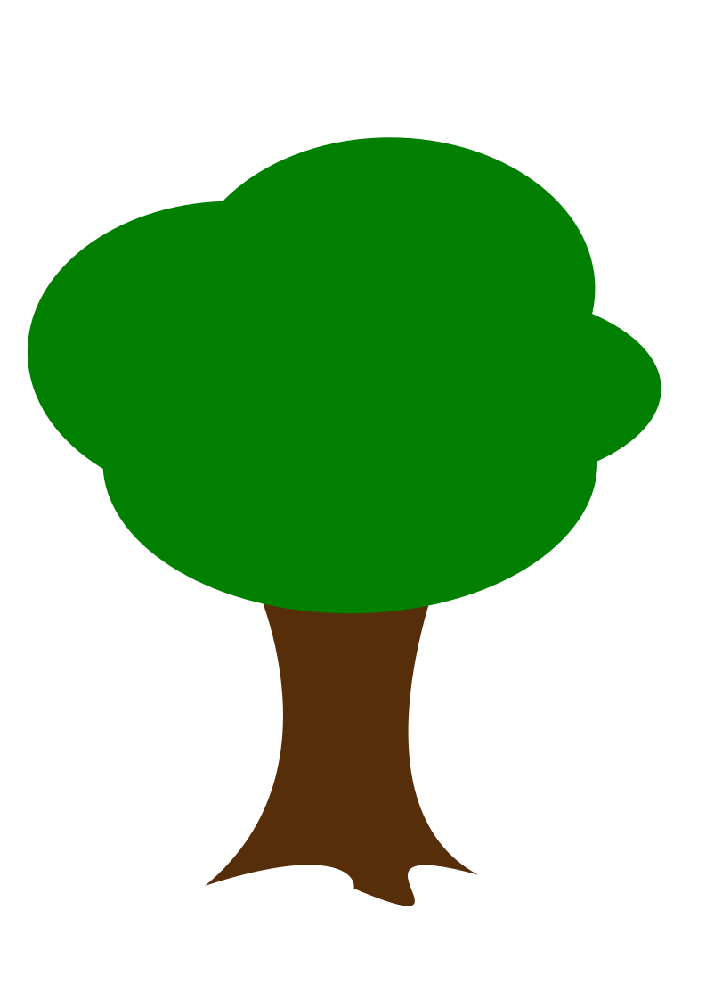
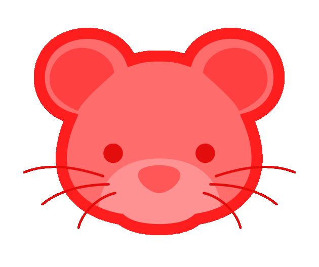
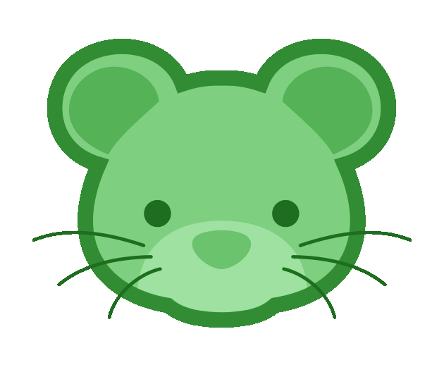
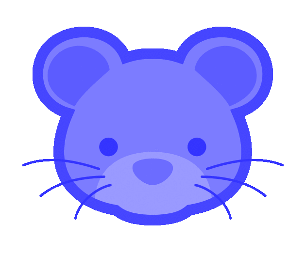
throw ball